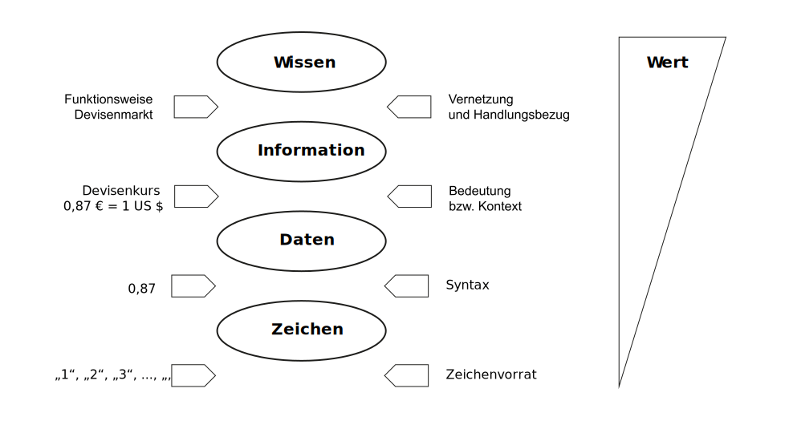
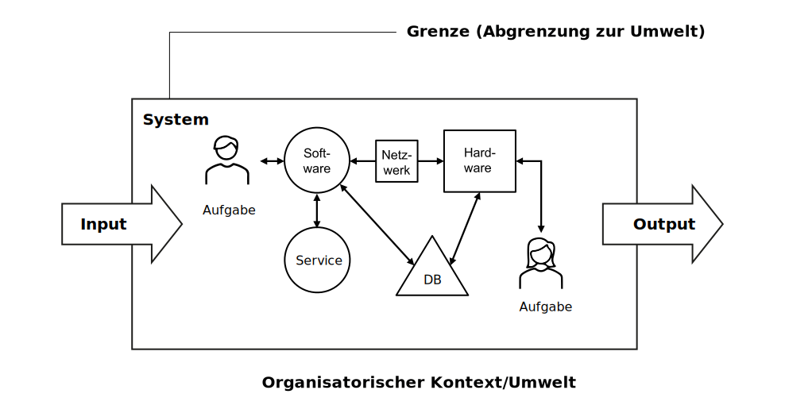
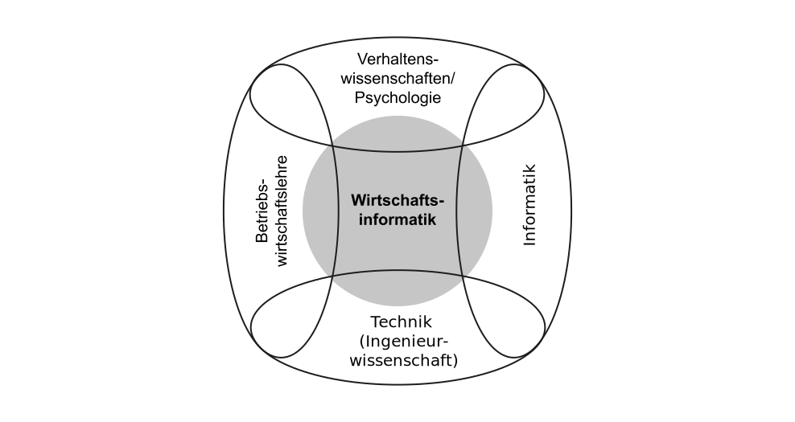
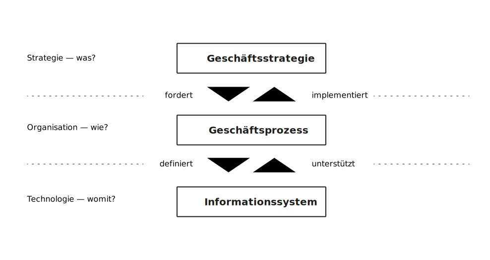

K1 Einführung
Grundzüge der Wirtschaftsinformatik (GWI)
Andy Weeger
University of Applied Sciences Neu-Ulm
Motivation
Wir sind längst in einer digitalisierten Welt angekommen. Die Digitalisierung betrifft nicht mehr nur klassische IT-Unternehmen, sondern Unternehmen quer durch sämtliche Branchen und Sektoren. Neue oder veränderte Geschäftsmodelle entstehen: Autos werden per App geteilt, Sprachen werden online gelernt und Musik wird gestreamt. Aber auch die Industrie wandelt sich: 3D-Drucker stellen Maschinenteile her, Roboter bauen diese zusammen, und ganze Fabriken sind intelligent miteinander vernetzt.
Bundesministerium für Wirtschaft und Energie (BMWI) 2020
Ähnlich wie einst die industrielle Revolution verändert heute die digitale Revolution unsere gesamte Lebens- und Arbeitswelt […]
Joachim Gauk, ehemaliger Bundespräsident
Every business is a software business now.
Dean Leffingwell, Creator of SAFe
Wer sich nicht digitalisiert, wird ausgeknockt.
Wladimir Klitschko, ehemaliger Box-Weltmeister
Erfolg der Software entscheidet über unsere Zukunft.
Herbert Diess (2017), CEO VW AG
Lernergebnisse
Nach dieser Einheit können Sie
- die Relevanz der Informationstechnologie und dessen Management für das digitale Zeitalter anhand von Beispielen skizzieren,
- wesentliche Begriffe wie Digitalisierung, Informationsmanagement und Wirtschaftsinformatik beschreiben und voneinander abgrenzen,
- beschreiben, wie Informationen entstehen,
- die Elemente, die ein Informationssystem definieren abstrakt und anhand eines Beispiels erläutern sowie
- die drei Ebenen des Business Engineerings darlegen.
Digitalisierung
Die Digitalisierung der Arbeits- und Lebenswelt ist der Megatrend im frühen 21. Jahrhundert.
Definition
Im technischen Sinn bedeutet Digitalisierung die Elektronifizierung von Informationen (elektronische Erzeugung, Speicherung, Verarbeitung, Anzeige und Nutzung) (Lemke und Brenner 2015).
Im weiteren Sinne werden unter Digitalisierung alle Veränderungen und deren Ergebnisse in allen Teilen der menschlichen Gesellschaft verstanden, die durch die verstärkte Anwendung von digitalen Technologien entstehen (Leimeister 2021).
Entwicklung
Ich habe früher dazu einmal „Neuland“ gesagt. Das hat mir einen großen Shitstorm eingebracht. Deshalb will ich das jetzt nicht einfach wiederholen. Jedenfalls ist es aber in gewisser Weise noch nicht durchschrittenes Terrain. […] Das Ganze ist im Grunde eine revolutionäre Phase.
Angela Merkel, ehemalige Bundeskanzlerin
Evolutionsstufen

✏️ Aufgabe 1
Beschreiben Sie an einem Beispiel aus Ihrer eigenen Lebenswelt, was Digitalisierung ist und wie diese Ihren Alltag (Arbeit und/oder Freizeit) verändert hat.
✏️ Aufgabe 2
Tauschen Sie sich darüber aus, welche Fähigkeiten Sie im Studium erwerben möchten, die Sie in die Lage versetzen Digitalisierung in Wirtschaft und Gesellschaft positiv zu gestalten. Dokumentieren Sie diese Fähigkeiten inkl. einer kurzen Beschreibung.
Nutzen Sie gerne Job-Portale, um Fähigkeiten zu identifizieren.
Information
Definition
Informationen sind Daten in einem gewissen Kontext.
Der Kontext verleiht den Daten Bedeutung.
Wissen entsteht, wenn Informationen miteinander vernetzt werden.
Wissen ist die Basis für Handlungen und Entscheidungen.
Daten sind Zeichen aus einem Zeichenvorrat, die in einen definierten, strukturierten Zusammenhang stehen.
Visualisierung

Eigenschaften
- Informationen sind immatrielle Ressourcen, aber nicht kostenlos
- Informationen stiften Nutzen, wenn sie in Handeln umgesetzt werden
- Der Wert der Information hängt von der kontextspezifischen und der zeitlichen Verwendung ab
- Der Wert der Information kann durch Hinzufügen, Selektieren, Konkretisieren und Weglassen verändert werden
- Es gibt unterschiedliche Qualitäten von Information
- Informationen sind leicht kopierbar, dadurch ist die Durchsetzung von exklusiven Rechten schwierig
- Informationen werden kodiert übertragen, deshalb sind Standards notwendig
(Krcmar 2015, p. 5)
Produktionsfaktor
Information kann als Produktionsfaktor im betrieblichen Leistungserstellungsprozess verstanden werden (Krcmar 2015, p. 5).
Informationen müssen deshalb analog zu den anderen Produktionsfaktoren betrachtet werden.
- Information muss selbst gesteuert werden.
- Information unterstützt die Steuerung der anderen Produktsionfaktoren.
✏️ Aufgabe 3
Grenzen Sie die Begriffe Wissen, Information, Daten und Zeichen anhand eines selbst gewählten Beispiels voneinander ab.
Informationsmanagement
Definition
Unter Management wird in der Betriebswirtschaft das Setzen von Zielen und Visionen, das Organisieren, das Entscheiden und das Kontrollieren sowie die Entwicklung und Förderung von Menschen im betrieblichen Kontext verstanden (Leimeister 2021, p.28).
Das Informationsmanagement befasst sich mit diesen Aktivitäten in Bezug auf Informationen. Zum Beispiel der Organisation und Kontrolle von Informationsflüssen innerhalb eines Unternehmens.
Das Informationsmanagement hat insbesondere zum Ziel, sicherzustellen, dass die benötigten Informationen zur richtigen Zeit in der richtigen Qualität und in der richtigen Menge am richtigen Ort sind.
Informationssysteme
Definition
Bei Informationssystemen handelt es sich um soziotechnische („Mensch-Maschine“) Systeme, die menschliche und maschinelle Komponenten (Teilsysteme) umfassen, insbesondere einer Aufgabenerfüllung dienen und zum Ziel der optimalen Bereitstellung von Information, Koordination und Kommunikation nach wirtschaftlichen Kriterien eingesetzt werden (Krcmar 2015, p. 8).
Informationssysteme ermöglichen also effektives und effizientes Informationsmanagement
Wesentliche maschinelle Komponenten von Informationssystemen sind der Informations- und Kommunikationstechnik (ITK, oder kurz IT) zuzuordnen. IT bezeichnet die Gesamtheit der zur Speicherung, Verarbeitung und Kommunikation zur Verfügung stehenden Ressourcen sowie die Art und Weise, wie diese Ressourcen organisiert sind (Krcmar 2015, p. 8).
Visualisierung

✏️ Aufgabe 4
Der Kauf einer Fahrkarte für die Deutsche Bahn (DB) über das Internet stellt ein Informationssystem dar. Sammeln und beschreiben Sie die Elemente des Informationssystems.
Diskutieren Sie die Vorteile dieses Informationssystems für die DB und die Kunden im Vergleich zum Kauf der Fahrkarte an einem Schalter.
Welche (technologischen) Entwicklungen ermöglichen dieses Informationssystem und führen dazu, dass es von Kunden genutzt wird?
Wirtschaftsinformatik
Definition
Die Wirtschaftsinformatik befasst sich mit allen Aktivitäten rund um Entwicklung, Einführung, Betrieb, Nutzung und Ablösung von Informationssystemen in Wirtschaft, Verwaltung und privatem Bereich.
Ziel ist insbesondere auch die Gestaltung von sozial akzeptablen, technisch stabilen und ökonomisch nachhaltigen Informationssystemen und Geschäftsmodellen (Leimeister 2021, p.11).
Die Wirtschaftsinformatik erforscht und gestaltet das (betriebliche) Informationsmanagement hinsichtlich
- der Führungsaufgaben des Informationsmanagement,
- des Managements der Informationslogistik,
- des Managements der Informationssysteme und
- des Managements der Informationstechnologie (IT)
Einordnung

Business Engineering
Einordnung
Neben der Entwicklung von neuen Informationssystemen und Geschäftsmodellen zielt die Wirtschaftsinformatik auch darauf ab, Unternehmen bei Veränderungsvorhaben zu unterstützen, die durch neue Informationssysteme und Geschäftslösungen notwendig sind (Leimeister 2021, p.14).
Diese Aktivitäten lassen sich unter dem Begriff Business Engineering zusammenfassen.
Definition
Das Business Engineering bezeichnet die ingenieurmäßige Vorgehensweise bei der Gestaltung von Veränderungsvorhaben in Unternehmen des digitalen Zeitalters unter Berücksichtigung von Unternehmensstrategie, Geschäftsprozessen und betrieblichen Informationssystemen (aufbauend auf Leimeister 2021, p.14).
Business Engineering leitet die Unternehmen im Übergang vom Industrie zum digitalen Zeitalter. Neben Veränderungen der Umwelt (Märkte, Kunden, Werte etc.) geht der Business Engineering Ansatz davon aus, dass insbesondere Innovationen aus dem Bereich der IT neue Geschäftslösungen ermöglichen.
Visualisierung

Gestaltungsebenen
Das Business Engineering Modell besteht aus drei Ebenen:
- Geschäftstrategie (was?): Festlegung der Ziele des Unternehmens bzw. der Einheit (u.a. Positionierung im Wettbewerb und Wertschöpfungsnetzwerken).
- Prozess (wie?): – Festlegung der organisatorischen Abläufe und Strukturen, die die Erreichung der strategischen Ziele ermöglicht (u.a. Verantwortlichkeiten, Berichtswege, Aktivitäten und Abläufen, Informationsbedarfe und -flüsse).
- Informationssystem (womit?): Festlegung des Einsatzs von Informationssystemen und der Beschaffenheit der Softwarekomponenten, Datenstrukturen sowie Hardwarekomponenten.
Die übergeordnete Ebene definiert jeweils Anforderungen an die untergeordnete Ebene. Die jeweils Ebene unterstützt die übergeordnete Ebene
Quelle: Österle (2007)
✏️ Aufgabe 5
Vergleichen Sie anhand der Gestaltungsebenen des Business Engineering Modells das Unternehmen Uber mit dem Unternehmen Ulm-Taxi, einem klassischen Taxi-Unternehmen.
- Worin unterscheiden sich die Unternehmen hinsichtlich Strategie, Organisation/Geschäftsprozesse und genutzten Informationssystemen?
- Beschreiben Sie die Komponenten des Informationssystems des Unternehmens Uber.
- In welchem Unternehmen würden Sie gerne arbeiten? Weshalb?